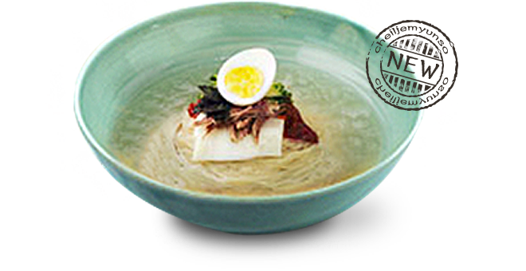
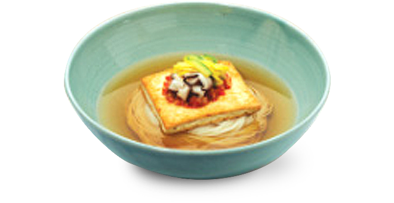
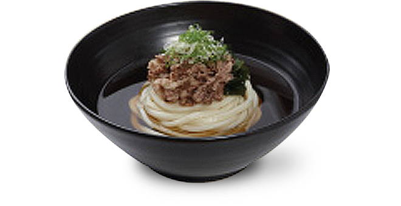
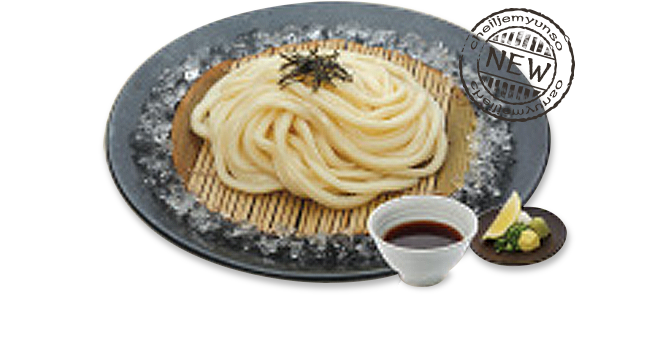
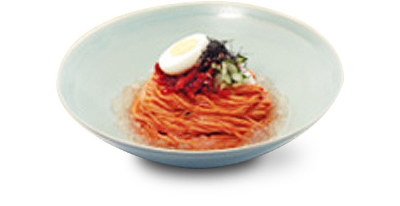
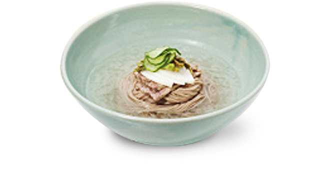

제일제면소에서는 각 육수 베이스 메뉴에 따라 우동면, 소면, 메밀면, 쌀면 총 4가지 면을 취향에 맞게 선택하실 수 있습니다.
- 제일제면소에서 정통방식 그대로 자가제면하여 갓 뽑아낸 면
- 쫄깃하고 정갈한 맛을 느낄 수 있는 면
- 향긋하고 은은한 메밀향을 느낄 수 있는 면
- 깔끔하고 개운하게 즐길 수 있는 면
- 부산 밀면 우동면/소면 Hot Noodle with Korean Dried Anchovy Broth
- 9,500원
-

경상도식 여름 냉면. 부산 밀면! 시원한 동치미 국물에 쫄깃쫄깃한 밀면을 말아 새콤달콤한 특제 양념장으로 맛을 낸 국수로, 부산의 바닷내음 물씬 나는 국수입니다.
- 제일 우동면/소면 Hot Noodle with Selected Seaweed & Smoked Tuna Broth
- 7,500원
-
엄선된 다시마와 훈연 가다랑어포 등으로 매일 아침 정성껏 우려내어 깊고 풍부한 국물과 유부 고명을 함께 맛 볼 수 있는 메뉴
- 잔치 소면/쌀면 Hot Noodle with Korean Dried Anchovy Broth
- 8,000원
-

남해 멸치로 우려내어 개운하고 담백한 국물과 오방색으로 어우러진 고명을 곁들여 함께 맛 볼 수 있는 메뉴
- 차돌박이우동면/쌀면 Hot Noodle with Selected Seaweed & Smoked Tuna Broth, Topped with Beef Brisket
- 9,800원
-

매일 아침 정성껏 우려낸 국물과 간장소스로 맛을 낸 차돌박이, 완도산 미역이 잘 어우러진 깊고 진한 맛의 메뉴
- 쟁반우동면/메밀면 Cold Noodle with Specialized Dipping Sauce
- 7,500원
-

훈연 가다랑어포로 맛을 낸 메밀 소스에 무, 고추냉이 등을 곁들여 차가운 면을 담궈 즐기는 메뉴
- 비빔소면/메밀면 Cold Noodle with Red Pepper Sauce and Dried Pollack
- 8,000원
-

새콤달콤한 양념장과 매장에서 직접 숙성해 만든 명태초무침을 함께 곁들여 즐기는 메뉴
- 동치미소면/메밀면 Cold Noodle with Radish Water Kimchi
- 9,800원
-

투명한 살얼음이 가득해 시원하고, 동치미 육수의 깔끔함과 감칠맛이 일품인 메뉴